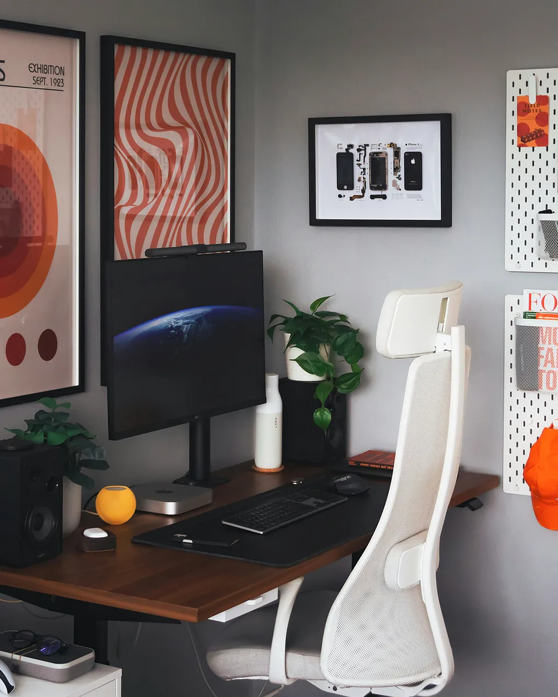

<section class="recommended-display">
  <div class="container">
    
    <div class="recommended-display__content">
      <p class="recommended-display__label">NEW IN STOCK</p>
      <h2 class="recommended-display__title">/NEURODISPLAY 24"/</h2>
      <p class="recommended-display__price">$199.99</p>
      <hr class="recommended-display__divider" />
      <p class="recommended-display__description">
        Designed with creatives in mind, the NeuroDisplay features 100% Adobe
        RGB<br />
        color accuracy and a 4K UHD display, ensuring that every detail in your<br />
        projects is presented with the highest precision. Whether you're
        editing<br />
        photos, videos, or working on digital art, the NeuroDisplay guarantees<br />
        true-to-life colors and sharp visuals, making it an essential tool for<br />
        professionals.
      </p>
      <h3 class="recommended-display__specs-title">Key Specs:</h3>
      <ul class="recommended-display__list">
        <li><strong>Resolution:</strong> 4K UHD (3840×2160)</li>
        <li><strong>Refresh Rate:</strong> 120 Hz</li>
        <li><strong>Response Time:</strong> 1ms</li>
        <li><strong>Color Gamut:</strong> 125% sRGB</li>
        <li><strong>Connectivity:</strong> HDMI, DisplayPort, USB-C</li>
      </ul>
      <a href="monitors.html" class="recommended-display__shop-btn">Order Now</a>
    </div>
  </div>  
</section>
